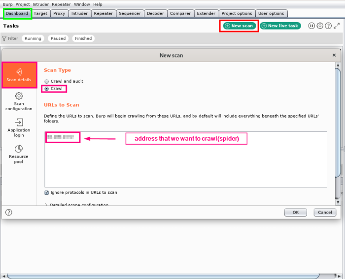

Spidering (aka Crawling)
"Spidering" (or "crawling") a website is when an attacker follows the links on a website and downloads each page encountered.
The result is that the attacker has a copy of the entire publicly linked site.
Attackers can then analyze the site offline at their leisure, browsing the source and identifying potential security weaknesses without creating additional server web logs.
Automated spidering tools are known as "robots" These are often used by search engines, such as Google, to generate a database of pages available on the web. Robots can also be used by website administrators to check the validity of links, by spammers to gather email addresses, or for other purposes
Robots.txtHow to use Robots.txt →
http://www.robotstxt.org/• One method of controlling this type of robot is a
robots.txt file
◇ Placed in the document root of the web application, readable by anyone accessing the website
◇ Specifies which User-Agent types should be disallowed access to certain directories or individual pages
◇ This is not a security control, contrary to popular belief
• Use of HTML Robots META tag to indicate that robots should not view a particular page. However, this method is not in common use.
◇ Tags to prevent caching of the content:
▪ <META HTTP-EQUIV="PRAGMA" CONTENT="NO-CACHE">
▪ <META HTTP-EQUIV="CACHE-CONTROL" CONTENT="NO-CACHE">
◇ Tags to control search engine spiders and where they go:
▪ <META NAME="ROBOTS" CONTENT="INDEX,NOFOLLOW">
▪ <META NAME="GOOGLEBOT" CONTENT="NOARCHIVE">
from Burpsuite 2.0all the page that we will crawl we can see the in
Proxy→ Site map {kind=link}